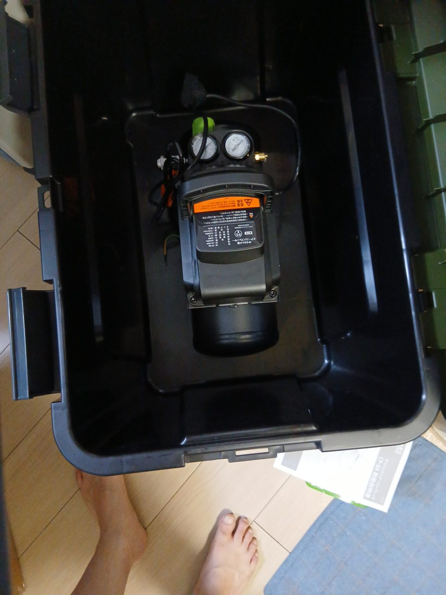
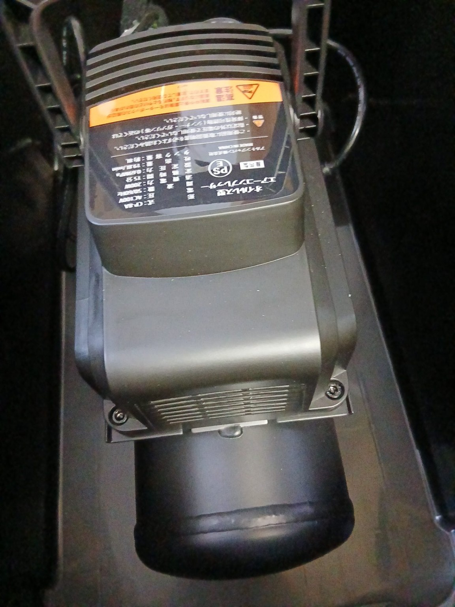
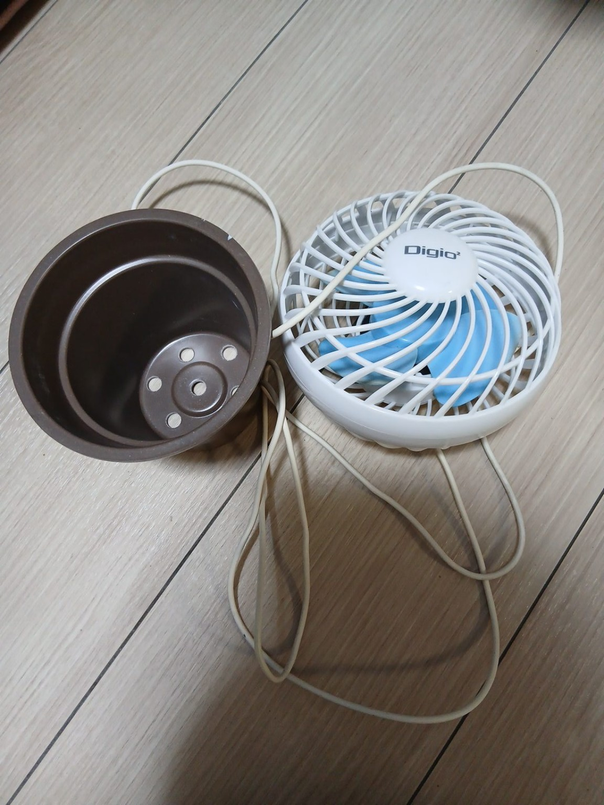
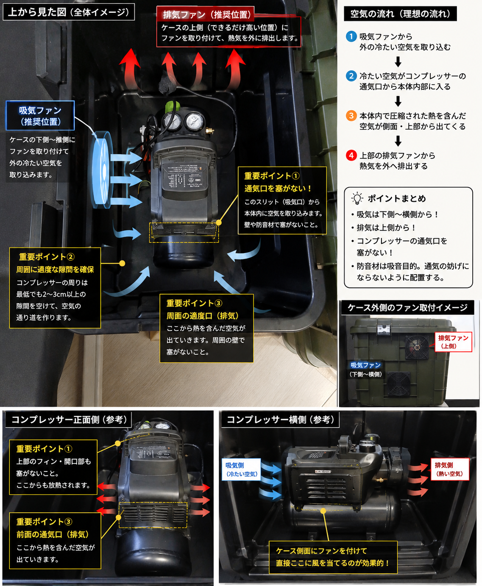
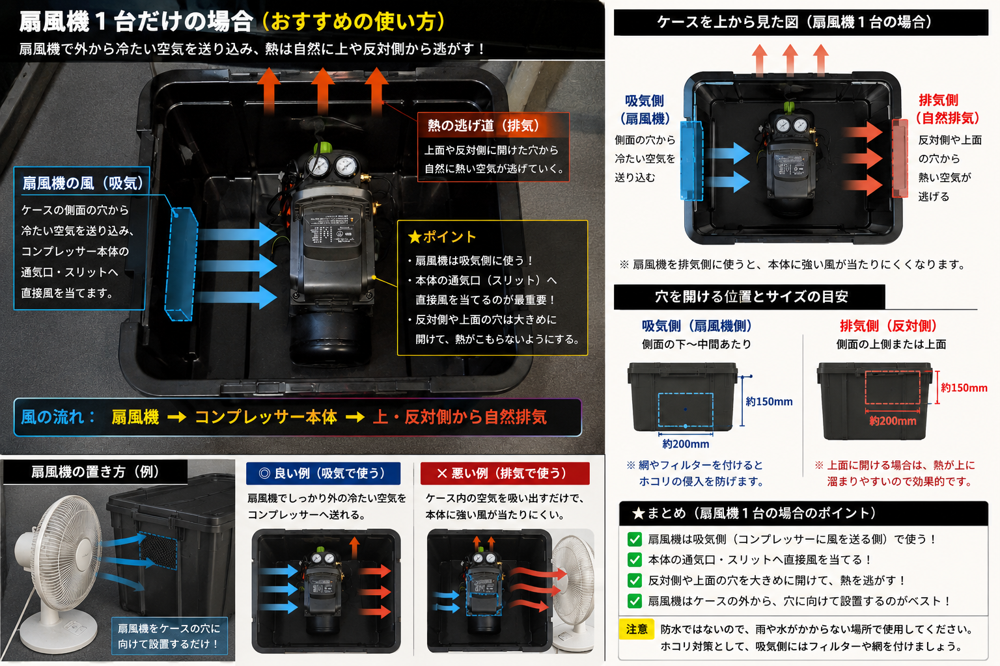
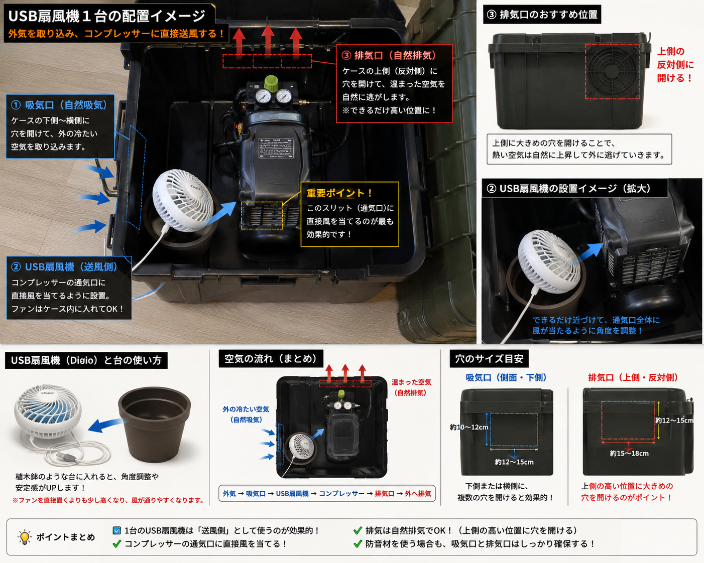
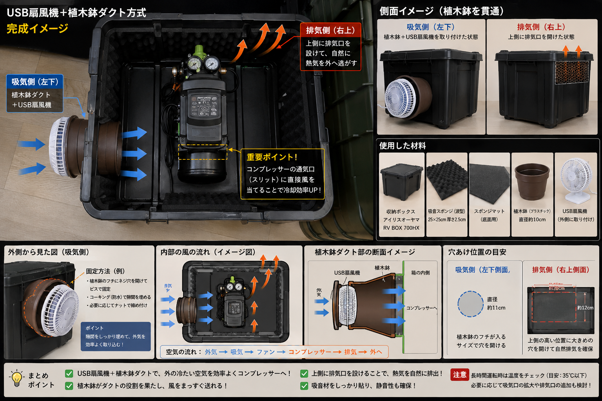

ミナトCP-8Aを購入！


今後のDIY塗装などに使うため、 ミナトのコンプレッサー CP-8A を購入しました。 コンパクトなので置き場所にも困りにくく、 収納ボックスにもすっぽり収まります。
でも、箱に入れたら熱がこもる……

音を外へ出したくないなら、 できるだけ箱を閉じたくなります。 でもコンプレッサーは運転中に熱を持つので、 完全に密閉してしまうわけにはいきません。 そこで今回は、 「音は抑えたい。でも空気はちゃんと通したい」 という方向で考えました。
家にあったUSB扇風機を使ってみる

冷却用のファンを新しく買おうかとも思いましたが…… 家に小型のUSB扇風機がありました。 そして、その横には植木鉢（笑） ここで思いついたのが、 「この植木鉢をダクトにできるんじゃない？」 という方法です。
USB扇風機1台でどう冷やす？


USB扇風機は1台だけなので、 今回は排気ではなく、 外の空気を取り込む「吸気側」 として使うことにしました。 できるだけコンプレッサーの通気部分へ 直接風を送るようにします。
PLANNING
構想をまとめるとこんな感じ

USB扇風機をどこへ置くか。 吸気と排気をどう分けるか。 植木鉢をどうダクトとして使うか。 いろいろ考えながら、 このあたりで最終的な形を決めていきました。
実際に作りながら、吸気・排気や防音材の配置を調整していきます。
防音・防振も追加
ケース内部には波型の吸音スポンジを使用。 さらに底面には防振材を入れて、 コンプレッサーの振動が収納ボックスへ 直接伝わりにくいようにしました。 ただし、 コンプレッサーの通気口は塞がない。 防音材を詰め込みすぎず、 冷却用の空気が通れるスペースを残すようにしています。
FINISHED
そして完成！
最終的にこんな感じになりました

最初は、 「収納ボックスに入れて少しでも静かにできないかな？」 というところから始まりました。 USB扇風機、植木鉢ダクト、吸音材、防振材、 そして吸気と排気の流れを考えながら、 最終的にこの形に仕上がりました。 コンプレッサー防音＆冷却ボックス、完成！